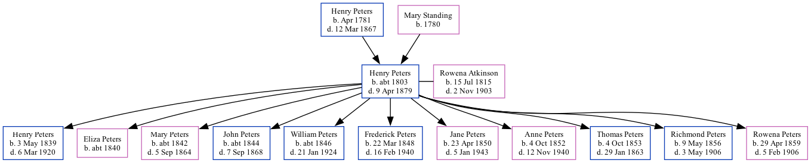

Henry Warman Peters c1803 - 1879
[ Home ] | [ Calendar ] | [ Surnames Index ] | [ Family History ]The child of Henry Peters and Mary StandingHenry Peters, the first cousin four-times-removed on the father's side of Nigel Horne, was born in Folkestone, Kent, England c. 18031,2,3,4, was baptized there at Ss Mary & Eanswith Church on Dec 26, 1803 and married Rowena Atkinson (with whom he had 11 children: Henry Watson, Eliza A, Mary Amelia C, John Wesley, William Fletcher, Frederick Smallwood, Jane Marion, Anne Atkinson, Thomas Albert, Richmond Noble and Rowena Caroline) in Richibucto, Kent, New Brunswick, Canada on Oct 2, 1838.
Throughout his life, he lived in Richibucto in 18611 and in Kent in 18714 (the same place as his father had been living in 1861).
He died on Apr 9, 1879 in New Brunswick and was buried at Richibucto Protestant Cemetery, Richibucto, New Brunswick after Apr 9, 1879.
Parents
- Henry was born in Apr 1781
- Mary was born in 1780
Children
- Henry Watson was born on May 3, 1839
- Eliza A was born c. 1840
- Mary Amelia C was born c. 1842
- John Wesley was born c. 1844
- William Fletcher was born c. 1846
- Frederick Smallwood was born on Mar 22, 1848
- Jane Marion was born on Apr 23, 1850
- Anne Atkinson was born on Oct 4, 1852
- Thomas Albert was born on Oct 4, 1853
- Richmond Noble was born on May 9, 1856
- Rowena Caroline was born on Apr 29, 1859
Citations
- 1861 Census of Canada Ancestry.com Operations Inc (Relation to Head of House: Head)
- 1871 Census of Canada Ancestry.com Operations Inc
- Canada Census 1861 - Findmypast (was the head of the household)
- Kent County, New Brunswick Census, 1871: Eight Subdistricts Ancestry.com Operations Inc (Marital Status: Married)
Media
Kent Baptisms - GBPRS/CANT/B/96142799
England Births & Baptisms 1538-1975 - R_882939800
Family Tree

Map
Generated by ged2site. Last updated on Feb 28, 2025